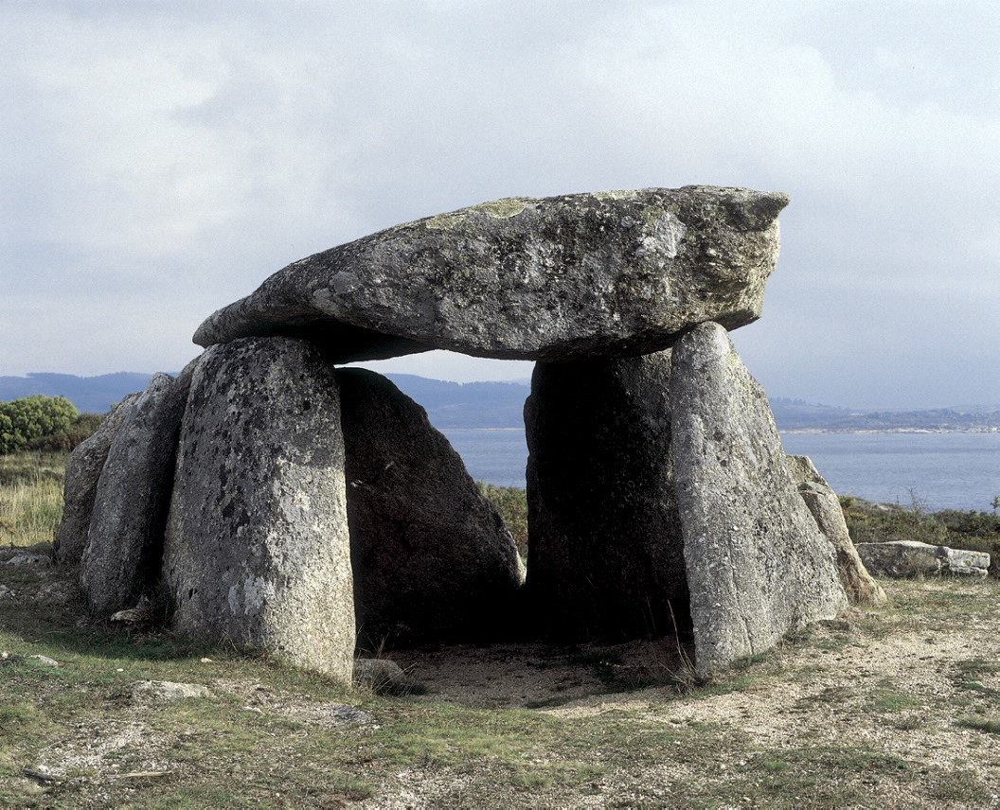

Dólmenes de Mandubi
La ruta de los dólmenes, que debe su nombre al eminente paleontólogo y etnógrafo José Miguel de Barandiaran, conecta en el valle gipuzcoano de Deba, en los términos municipales de Bergara, Soraluze y Elgoibar, con la historia arqueológica de Euskal Herria a través de la visita a 16 monumentos megalíticos de la estación de Elosua-Plazentzia.
No hace falta mucho tiempo para recorrer esta ruta de monumentos funerarios, de desnivel escaso y que, además, ofrece unas vistas inigualables entre los valles del Urola y Deba. Las panorámicas, en cualquiera de las direcciones, son espectaculares, ya que a un lado nos encontramos con el abrazo del Cantábrico y al otro,